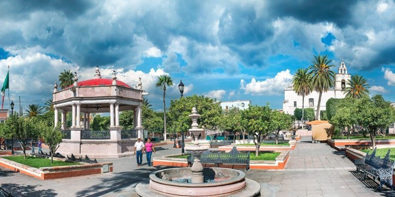
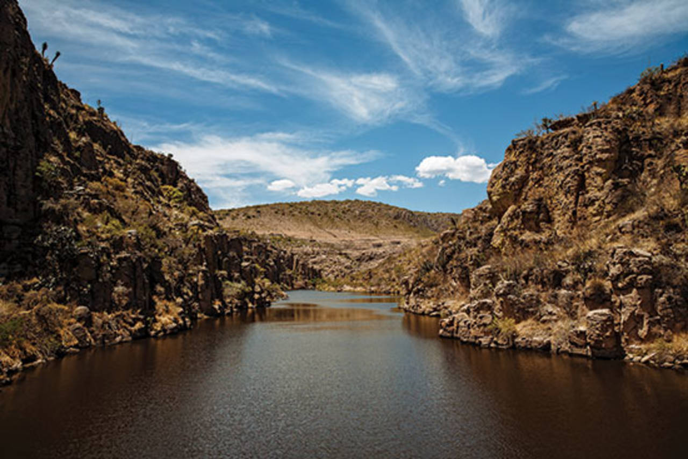
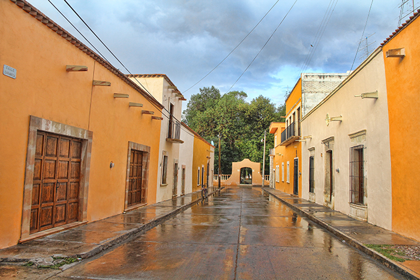

<!--
  Generated template for the MenuGalPage page.

  See http://ionicframework.com/docs/components/#navigation for more info on
  Ionic pages and navigation.
-->
<ion-header>

  <ion-navbar color="cabecera">
    <ion-title>GALERÍA</ion-title>
  </ion-navbar>

</ion-header>

<ion-content class="card-background-page">

    <ion-card (click)="IrGaleria()">
      
      <div class="card-title">Aguascalientes</div>
      <div class="card-subtitle">Capital</div>
    </ion-card>
  
    <ion-card (click)="IrGaleria()">
      
      <div class="card-title">Calvillo</div>
      <div class="card-subtitle">Pueblo Mágico</div>
    </ion-card>
  
    <ion-card (click)="IrGaleria()">
      
      <div class="card-title">San Jose de Gracia</div>
      <div class="card-subtitle">Pueblo Mágico</div>
    </ion-card>
  
    <ion-card (click)="IrGaleria()">
      
      <div class="card-title">Real de Asientos</div>
      <div class="card-subtitle">Pueblo Mágico</div>
    </ion-card>
  
  </ion-content>
